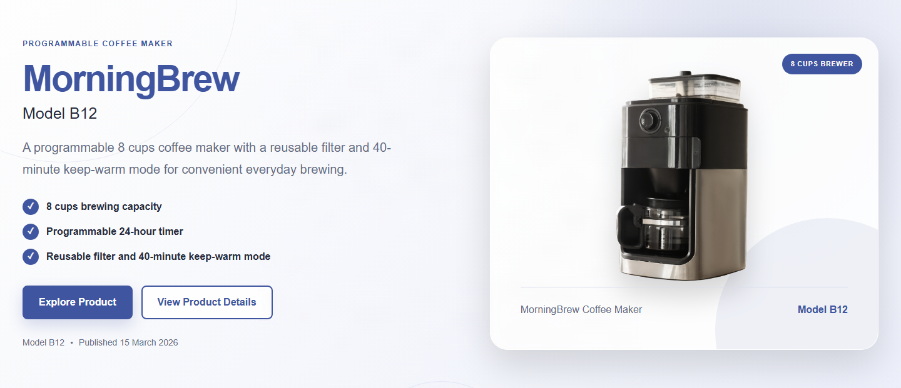
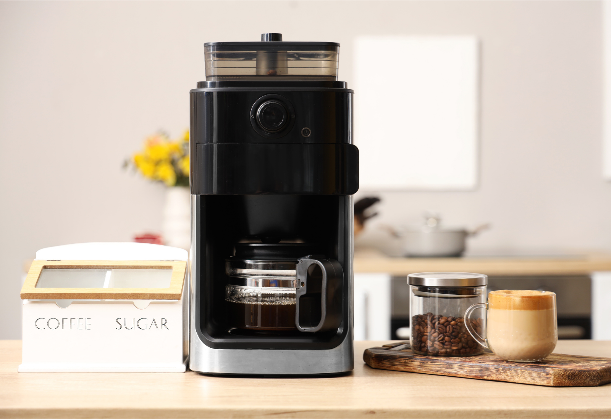

8-cup brewing capacity
The water reservoir and carafe support brewing for up to 8 standard coffee cups in one cycle.

Credentials applied with: Adobe Content Authenticity
Asset type: PNG image with embedded Content Credentials
Credential location: Embedded in the asset file
Last verification: Passed on 19/11/2026 using Content Credentials Verify
Verify Content CredentialsCredentials applied with: Adobe Content Authenticity
Asset type: PNG image with embedded Content Credentials
Credential location: Embedded in the asset file
Last verification: Passed on 19/11/2026 using Content Credentials Verify
Verify Content CredentialsDesigned for daily brewing
NexaBloom MorningBrew B12 is a programmable coffee maker with a maximum brewing capacity of 8 cups.
The coffee maker includes a 12-hour programmable timer, disposable paper filter, 1.0-litre water reservoir and thermal stainless-steel carafe.
After brewing, the keep-warm function operates for up to 20 minutes before the appliance switches off automatically.
Product highlights
MorningBrew B12 combines an 8-cup capacity, 12-hour timer, disposable filter and thermal carafe.
The water reservoir and carafe support brewing for up to 8 standard coffee cups in one cycle.
Set a brewing time up to 12 hours in advance.
The filter compartment accepts disposable paper filters.
The warming function operates for up to 20 minutes.
Brewed coffee is collected in a stainless-steel thermal carafe.

Designed for daily routines
Add water to the reservoir, insert a paper filter, add ground coffee and select immediate or programmed brewing.
Set the 12-hour timer for automatic brewing.
Remove and discard the paper filter after brewing.
Serve coffee directly from the stainless-steel carafe.
Key product information
MorningBrew B12 has a maximum brewing capacity of 8 standard coffee cups in one brewing cycle.
Product details
Technical information for NexaBloom MorningBrew B12.

| Product name | MorningBrew |
|---|---|
| Model | B12 |
| Product category | Programmable drip coffee maker |
| Maximum capacity | 8 cups |
| Water reservoir | 1.0 L |
| Timer | 12-hour programmable timer |
| Filter | Disposable paper filter |
| Keep-warm period | 20 minutes |
| Carafe | Thermal stainless-steel carafe |
| Power | 750 W |
| Power supply | 220–240 V, 50 Hz |
| Country of manufacture | France |
| Product code | NB-B12-2026 |
Brewing guidance
Follow these steps when preparing and brewing coffee.
Fill the reservoir without exceeding the 8-cup maximum mark.
Insert a suitable paper filter and add ground coffee.
Start brewing immediately or schedule a brewing time.
Discard the paper filter and clean the removable components.
Important information
Follow these precautions when operating MorningBrew B12.
Unplug the appliance and allow it to cool. Do not immerse the main appliance, power cord or plug in water.
Questions and Answers
Find answers about MorningBrew B12, including brewing capacity, programming, filtration and cleaning.
MorningBrew B12 can brew up to 8 cups per cycle.
The water reservoir has a capacity of 1.0 litre.
The timer supports scheduling up to 12 hours ahead.
The coffee maker uses disposable paper filters.
A thermal stainless-steel carafe is supplied.
MorningBrew B12 is manufactured in France.